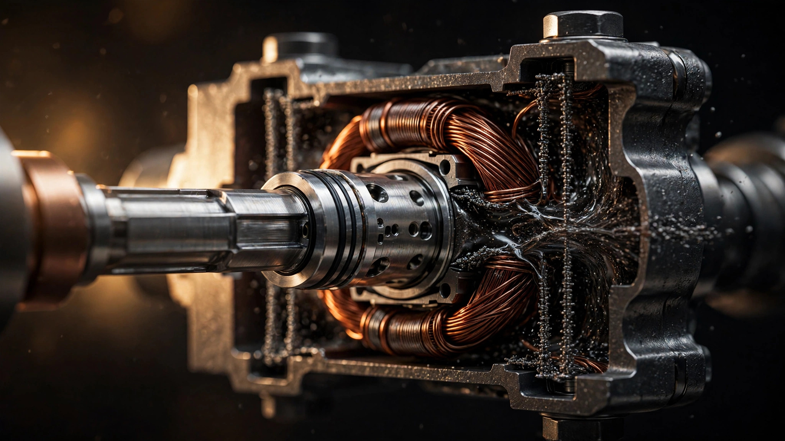

Three Microns, No Valves: How Carbonyl Iron Rewrote the Shock Absorber

A conventional monotube shock absorber is a mechanical compromise stacked six layers deep. Oil flows through a piston inside a pressurized cylinder, and the piston contains a stack of thin metal discs, shims, and spring washers arranged in a specific order to resist that flow. Compression and rebound each get their own valve stack, their own flow paths, their own tuning. Engineers select shim thickness, diameter, and preload to produce a damping curve that works acceptably across the entire range of inputs the car will encounter, from a highway expansion joint at 80 mph to a gravel driveway at walking speed. Once assembled, those shims do not change. A damper tuned for flat composure on a racetrack will crash over urban potholes. One calibrated for boulevard comfort will wallow through corners. Every conventional damper is a single fixed answer to an infinitely variable question.
In 2002, General Motors put a different kind of shock absorber on the Cadillac Seville STS. It had no valve stacks, no shims, no mechanical flow restrictions of any kind inside the piston. Instead, the cylinder was filled with a dark, heavy fluid containing billions of microscopic iron particles. An electromagnetic coil wrapped around the piston generated a magnetic field across a narrow gap, and when current flowed through that coil, the iron particles snapped into chain-like structures along the field lines, transforming the fluid from something close to motor oil into something closer to wet cement. Varying the current varied the chains. Varying the chains varied the damping force. Continuously, proportionally, and in less time than it takes a housefly to beat its wings once.
GM called the system Magnetic Ride Control. Twenty-four years and four generations later, it remains the fastest-reacting production suspension technology in the automotive industry. And the engineering that makes it work begins not with the car, not with the damper, but with the particles.
Carbonyl Iron: Built for a Magnetic Field
Magnetorheological fluid is not exotic in concept. Mix magnetic particles into a carrier liquid, apply a magnetic field, and the particles respond. Jacob Rabinow, a government researcher at the U.S. National Bureau of Standards, described the principle in 1948 and built crude prototype clutches and brakes using iron filings in oil. His devices worked, but they were heavy, unreliable, and the particles settled out of suspension within hours. For decades, the idea remained a laboratory curiosity with no viable commercial application.
What changed was the particle. Modern magnetorheological fluids use carbonyl iron powder, or CIP, produced by the thermal decomposition of iron pentacarbonyl gas. BASF, the primary global supplier, manufactures CIP by heating iron pentacarbonyl vapor until it decomposes into pure iron and carbon monoxide. Iron atoms nucleate in the gas phase and grow into nearly perfect microspheres, typically between one and five microns in diameter. A five-micron particle is roughly the size of a red blood cell. Each sphere is chemically pure iron with a thin oxide shell, possessing a saturation magnetization above 200 emu/g and a density of 7.86 grams per cubic centimeter.
Spherical shape matters enormously. Irregularly shaped particles interlock mechanically even without a magnetic field, raising the baseline viscosity and creating unpredictable flow behavior. Spheres roll past each other freely when unmagnetized, keeping off-state viscosity low and consistent. When a magnetic field arrives, each sphere acquires a magnetic dipole and aligns nose-to-tail with its neighbors along the field lines. Chains of particles bridge the gap between magnetic poles, creating structures that resist shear. Remove the field, and Brownian motion plus the carrier fluid's own viscosity scatter the particles back into random suspension within milliseconds.
Carrier fluid selection is equally deliberate. Automotive MR fluids use synthetic hydrocarbon oil or silicone oil, chosen for thermal stability across the operating range of a vehicle suspension. Silicone oil maintains consistent viscosity from minus 40 degrees Celsius to well above 150 degrees, temperatures a damper routinely encounters between a Minnesota winter morning and a summer track day. Additives prevent the dense iron particles from settling to the bottom of the cylinder during long periods of inactivity. Anti-wear agents protect the cylinder bore and piston surfaces from abrasion by the iron microspheres. Surfactants coat each particle to prevent agglomeration. A well-formulated MR fluid is an engineered composite, not a simple mixture.
Anatomy of the Damper
A MagneRide damper looks like a conventional monotube shock absorber from the outside: a steel cylinder roughly 46 millimeters in bore diameter, a chrome-plated piston rod, and mounting hardware at each end. Inside, the differences are fundamental.
A conventional monotube piston carries shim stacks, check valves, and precisely sized orifices machined into its face. A MagneRide piston carries an electromagnetic coil wound around a ferromagnetic core. No shims. No check valves. No orifices. Instead, a flux ring surrounds the piston core at a precisely controlled radial distance, creating an annular gap typically between 0.5 and 1.0 millimeters wide. MR fluid fills the entire cylinder and must pass through this annular gap whenever the piston moves relative to the cylinder body.
When no current flows through the coil, the MR fluid behaves as a moderately viscous Newtonian fluid. Particles are randomly distributed. Flow through the annular gap is unimpeded except by baseline fluid viscosity, producing a soft, compliant damping force equivalent to the lightest conventional setting. When current flows, the coil generates a magnetic field that crosses the annular gap perpendicular to the direction of fluid flow. Iron particles in the gap align into columnar chains bridging from the piston core to the flux ring. These chains resist the fluid's attempt to flow through the gap. More current means a stronger field, which means more chains and stronger chains, which means higher flow resistance, which means a stiffer damper. Peak yield stress in commercial MR fluid reaches 60 to 80 kilopascals under strong applied fields, enough to generate damping forces comparable to the stiffest conventional racing shock absorber.
Below the piston, a floating gas cup separates the MR fluid volume from a pressurized nitrogen gas charge, typically 20 to 25 bar. As the piston rod enters and exits the cylinder during compression and extension strokes, the volume of rod inside the cylinder changes. Nitrogen compression accommodates this volumetric change, just as it does in a conventional monotube damper. Without the gas charge, cavitation would occur during fast extension strokes, creating vapor bubbles that collapse violently and degrade damping performance.
Speed Without Moving Parts
Consider what happens when a front wheel of a CT5-V Blackwing hits a sharp pothole at highway speed. In a conventional adaptive damper with solenoid-actuated valves, the control sequence is: sensor detects the disturbance, controller computes the desired damping force, controller sends current to a solenoid, the solenoid generates a magnetic force, the magnetic force overcomes a return spring to move a valve spool, the valve spool physically repositions to change the oil flow path, and oil begins flowing through the new restriction. Each mechanical step adds latency. Spool mass, spring preload, fluid inertia, and friction all resist the valve's motion. Total response time from sensor input to changed damping force ranges from 20 to 50 milliseconds in a good solenoid-valve system.
In a MagneRide damper, the sequence is: sensor detects the disturbance, controller computes the desired damping force, controller sends current to the piston coil, the magnetic field changes, and the iron particles rearrange. No spool. No spring. No mechanical element moves. Particle chain formation in commercial MR fluid occurs in under 10 milliseconds, and the practical system response from sensor input to altered damping force approaches 5 milliseconds in MagneRide 4.0. At highway speed, five milliseconds corresponds to roughly half a foot of wheel travel. By the time a conventional solenoid valve has finished moving its spool, MagneRide has already changed its damping force, measured the result, and adjusted again.
This speed advantage compounds with sampling rate. MagneRide 4.0's wheel-mounted accelerometers read vertical acceleration at each corner up to 1,000 times per second. An inertial measurement unit on the body adds roll, pitch, and yaw data. Together, these inputs feed a controller that recomputes the optimal damping force for each corner every millisecond. Because the MR fluid responds fast enough to execute those commands in real time, the system operates as a true closed-loop control system rather than the open-loop or slow-loop approximations that mechanical adaptive dampers achieve.
From Seville to Blackwing: Four Generations
General Motors' Delphi Automotive division developed the first production MR damper in the late 1990s. Delphi's MR fluid formulation, piston geometry, and control algorithms debuted on the 2002 Cadillac Seville STS, and the 2003 Corvette C5 became the first sports car to use the technology. Early MagneRide was impressive but crude by current standards. Sampling rates were lower. Control algorithms were simpler. And the response speed, while faster than mechanical alternatives, was limited by first-generation coil and fluid designs.
In 2009, GM sold its Delphi suspension division to BeijingWest Industries (BWI), a Chinese automotive supplier backed by the Beijing municipal government. BWI continued development, introducing a dual-coil piston design that improved magnetic flux distribution across the annular gap. Two coils instead of one allowed more uniform chain formation along the full length of the piston, reducing dead zones where the field weakened and damping force dropped. Response characteristics improved, and the usable dynamic range between softest and firmest settings widened.
MagneRide 3.0 arrived in the mid-2010s on the C7 Corvette Z06 and Camaro ZL1, bringing improved algorithms and sensor integration. But 4.0, which debuted on the 2021 CT4-V and CT5-V, represented the most comprehensive update since the system's introduction. Cadillac's Thomas Schinderle, vehicle performance engineer, described a 45 percent faster damping response compared to the previous generation. New wheel accelerometers replaced older sensors. An inertial measurement unit was added to the vehicle body for the first time, giving the controller direct measurements of chassis motion rather than inferring it from wheel data alone. Magnetic flux control within the piston improved, likely through refined coil geometry and tighter tolerances on the annular gap.
For the CT5-V Blackwing specifically, MagneRide 4.0 pairs with a MacPherson strut front suspension using forged-aluminum control arms and a five-link independent rear with forged links. An electronic limited-slip differential works in concert with the dampers, sharing sensor data so that traction and body control algorithms coordinate rather than compete. In Tour mode, damping stays soft enough that the 4,109-pound sedan rides like a conventional luxury car. In Sport mode, the controller tightens all four corners aggressively enough to generate over 1.0g of sustained lateral acceleration on Michelin Pilot Sport 4S tires. Same hardware, same fluid, same particles. Only the current changes.
Why the Particle Is the Engineering
Most suspension coverage treats MagneRide as an electronic system: sensors and software that make a car handle better. It is that. But the irreplaceable innovation is not in the controller or the software. It lives in the annular gap, in the behavior of carbonyl iron microspheres responding to a magnetic field.
A five-micron iron sphere suspended in silicone oil exists in a specific physical regime. It is large enough to respond strongly to a magnetic field (its magnetic moment scales with volume) but small enough that Brownian motion and viscous drag keep it suspended against gravity. It is dense enough (7.86 g/cm³) to form mechanically robust chains under field alignment but light enough that those chains collapse within milliseconds when the field disappears. Its nearly perfect sphericity ensures low off-state viscosity, so the damper feels compliant when the coil is unpowered. Its pure-iron composition delivers high magnetic permeability, meaning it responds to weak fields as readily as strong ones, giving the controller fine-grained authority over the full damping range.
Change any of these properties and the system degrades. Larger particles settle faster, requiring more aggressive anti-sedimentation additives that raise baseline viscosity. Smaller particles produce weaker chains at equivalent field strength because magnetic moment scales with volume. Irregular shapes interlock without a field, making the off-state damping too firm. Lower-permeability materials require stronger fields, which require more current, which generates more heat in the coil, which raises fluid temperature, which changes viscosity. Every parameter is coupled. Getting them all right simultaneously, and keeping them right across 100,000 miles and a decade of thermal cycling, is why MR fluid formulation remains proprietary and closely guarded.
What Wears Out
MR dampers are not maintenance-free forever, though they are remarkably durable. Field experience across Corvettes, Camaros, and Cadillacs shows typical service lives of 80,000 to 120,000 miles before damping performance degrades noticeably. Degradation comes from two primary mechanisms.
First, the iron particles slowly abrade as they slide against each other and against the cylinder bore during chain formation and collapse. Abrasion generates sub-micron iron fragments that contaminate the carrier fluid, raising its baseline viscosity and changing its magnetic response. Over tens of thousands of miles, the fluid becomes slightly thicker and less responsive, reducing the dynamic range between the softest and firmest damping settings.
Second, the carrier fluid itself degrades thermally. Silicone oil is stable, but sustained high temperatures from hard driving accelerate oxidation and breakdown of the additive package. Surfactant degradation allows particles to clump, creating localized regions of higher-than-normal viscosity. Anti-wear additive depletion increases abrasion rates, compounding the first mechanism.
Neither failure mode is sudden or dangerous. A worn MR damper does not fail open or lock solid. It gradually loses range, drifting toward a narrower band of damping variation that eventually feels like a conventional, non-adjustable shock absorber. Replacement is straightforward: bolt out the old damper, bolt in the new one, and the controller adapts immediately to the fresh fluid's response characteristics.
Beyond Cadillac: Where MR Dampers Spread
GM's early exclusivity on MagneRide has long since lapsed. BWI supplies MR dampers to Ferrari, which has used the technology since the 599 GTB Fiorano in 2006 and continues to specify it across the Roma, 296 GTB, and SF90 Stradale. Audi's Magnetic Ride option on the R8 and RS models uses BWI hardware. Range Rover specifies MR dampers on its flagship models, and Lamborghini has used them on every major platform since the Gallardo LP 570-4 Superleggera.
Each application uses different fluid formulations, different coil geometries, and different control software tuned to the specific vehicle's mass, wheelbase, suspension geometry, and intended character. Ferrari's calibration for a mid-engine supercar that weighs 1,400 kilograms and must corner at 1.3g has almost nothing in common with Range Rover's calibration for a 2,500-kilogram luxury SUV that must absorb off-road terrain while keeping the cabin serene. Yet both use the same fundamental principle: carbonyl iron microspheres forming and collapsing chains in a magnetic field, thousands of times per second, replacing every mechanical valve with physics.
No Valves Left to Fail
Mechanical complexity is the enemy of response speed, and conventional adaptive dampers are mechanically complex. Solenoid bodies, valve spools, return springs, flow channels, bypass circuits, pressure-relief stacks: each component adds mass that must be accelerated, friction that must be overcome, and tolerance that must be maintained across the damper's service life. Spring fatigue changes valve preload over time. Spool wear changes flow area. Contamination lodges in orifices. Every moving part is a source of degradation and a limit on how fast the system can respond.
MagneRide eliminated all of it. Inside a MagneRide piston, there is a coil, a core, a flux ring, and a gap. No springs. No spools. No shims. No check valves. No orifices to clog. The only moving element relative to the piston is the fluid itself, and the fluid does not wear in the conventional sense. It gradually changes composition through abrasion and thermal exposure, but it does not fatigue, seize, or break. Reducing the part count inside the piston from dozens of precision components to a single electromagnetic assembly is not just a manufacturing simplification. It is the reason the system responds in five milliseconds instead of fifty.
For the CT5-V Blackwing, this means something specific. At the limit of adhesion on a track surface, where the car is transitioning from full braking into a corner entry at over 100 mph, each wheel encounters a unique combination of vertical load, lateral force, longitudinal weight transfer, and surface irregularity. A damper that reacts in 50 milliseconds provides body control that is merely good. One that reacts in five provides control that borders on prescient, compensating for disturbances before the driver perceives them. That difference does not come from faster processors or better algorithms, though MagneRide has those too. It comes from replacing a spool and a spring with three-micron spheres of iron that snap into chains at the speed of a magnetic field propagating through fluid.
In 1948, Jacob Rabinow mixed iron filings into oil and imagined a future of electronically controlled machinery. Seventy-eight years later, his idea rides under every corner of the most powerful internal-combustion Cadillac ever built. Different particles, different oil, different scale. Same physics.
Sources
- Cadillac Media, “MagneRide 4.0: World’s Fastest Reacting Suspension Technology Gets Even Faster,” media.cadillac.com, October 2020.
- Carscoops, “Cadillac Debuts Next-Gen, Faster Reacting MagneRide 4.0 Suspension,” Sergiu Tudose, October 15, 2020.
- LORD Corporation, “RD-8041-1 Magnetorheological Damper” technical specification sheet.
- J. D. Carlson, “MR Fluids and Devices in the Real World,” International Journal of Modern Physics B, Vol. 19, 2005.
- U.S. Patent 6,464,049 B2, “Magnetorheological Fluid Damper Tunable for Smooth Transitions,” Delphi Technologies/GM.
- U.S. Patent 6,547,044, “Magneto-rheological Damper with Ferromagnetic Housing Insert,” Delphi Technologies, April 2003.
- Springer Nature, “Characterization of a Magnetorheological Damper for Semi-active Suspension Control,” 2024.
- Scientific Reports (Nature), “Effect of the Surface Coating of Carbonyl Iron Particles on the Dispersion Stability of Magnetorheological Fluid,” 2024.
- Wikipedia, “Magnetorheological Damper,” citing BeijingWest Industries development history.
- MDPI Sensors, “Application of Magnetorheological Damper in Aircraft Landing Gear: A Systematic Review,” 2024.